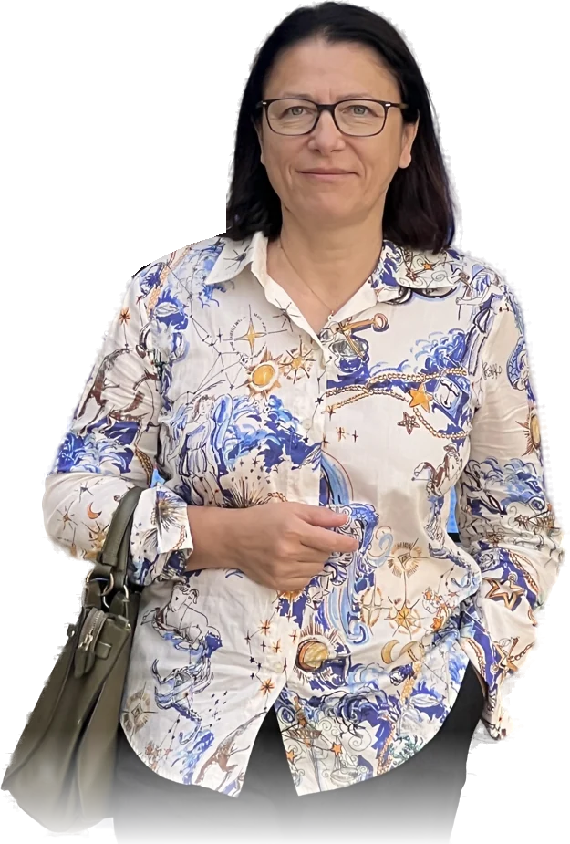

Возможно, проблема уже не в том, что вы «не знаете, чего хотите»
Вы понимаете, что вас не устраивает, но помните хорошее. Видите боль, но надеетесь на изменения. Думаете об уходе — и вспоминаете о детях, деньгах, жилье, семье, переезде или годах совместной жизни.
Поэтому вопрос «Остаться или уйти?» иногда годами не получает ответа.
Почему я могу помочь, если вы уже работали с психологом?
Возможно, после прежней работы вы лучше понимаете себя. Но вопрос «оставаться или уходить?» всё ещё открыт — и решение будто каждый раз начинается с нуля.
Я умею видеть, где именно человек застрял в этом круге.
- Трудно отличить надежду от реальных действий партнёра.
- Уже не хочется так жить, но не видно опоры для выхода.
- Нужен не немедленный выбор, а ясные условия, при которых вы готовы остаться.
Мы изменим сам вопрос
- Какие изменения мне необходимы, чтобы я могла остаться?
- Как я пойму по действиям, что они происходят?
- Сколько времени я готова наблюдать?
- Что я буду делать, если этого не случится?
С этого начинается решение, которое принадлежит вам — не психологу, не партнёру, не страху.
5 встреч: от спутанности к следующему шагу
От эмоций — к фактам
Ясная карта ситуации.
Повторяющийся сценарий
Понимание механизма застревания.
Условия, при которых вы готовы остаться
Проверяемые критерии вместо надежды.
Границы и реальные опоры
Дети, деньги, жильё, работа, документы, переезд, поддержка.
Решение или проверяемый следующий шаг
Конкретный план вместо бесконечного ожидания.
Вам не нужно заранее верить, что этот подход вам поможет
После первой встречи вы сможете оценить, стало ли понятнее, что происходит, какие вопросы остаются открытыми и появился ли следующий осмысленный шаг. Если подход не подходит — можно не продолжать.

Кто будет работать с вами
[Имя Фамилия] — психолог-консультант
- Специализация: «Кризисный психолог»
- Подготовка: Национальный центральный институт развития дополнительного образования (НЦРДО), г. Москва.
Я помогаю пройти через сложное решение последовательно: от спутанных чувств и повторяющихся событий — к проверяемым фактам, собственным границам и ближайшему безопасному шагу.
Вам больше не нужно каждый раз начинать решение с нуля
- Факты вместо постоянных сомнений
- Критерии реальных изменений вместо обещаний
- Понимание собственных границ
- Реальные опоры и ограничения
- Конкретный следующий шаг
Стоимость
499 € / 49 900 ₽
5 индивидуальных онлайн-встреч по 60 минут
Эквивалент одной встречи
99,80 € / 9 980 ₽
Полностью
499 € / 49 900 ₽
до начала программы.
Двумя частями
249,50 € / 24 950 ₽
до начала + 249,50 € / 24 950 ₽ до третьей назначенной встречи.
Прозрачные правила до начала работы
Перенос
По уважительной причине при предупреждении не менее чем за 24 часа.
Выход
Предупредить не менее чем за 72 часа до следующей встречи. Возврат — за непроведённые встречи за вычетом уже состоявшихся.
Бонусы
При выходе из программы бонусная программа не предоставляется.
Дополнительно после полного цикла
Тест «Состояния»
Внутренние состояния и реакции, влияющие на решения.
Тест «Деньги»
Отношение к финансовой безопасности и опорам.
Возможно, вам не нужно заставлять себя наконец принять решение
Сначала нужно понять, что именно не позволяет вам его принять — и отделить страх от фактов, надежду от реальных изменений, чужие ожидания от собственных границ.
Первый шаг — индивидуальная онлайн-встреча 60 минут. После неё вы сможете оценить мой подход и решить, хотите ли продолжать полный цикл.